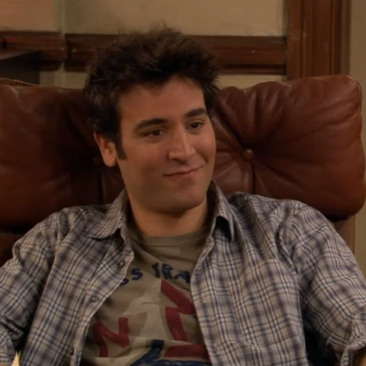

Theodore Evelyn "Ted" Mosby - também conhecido por T-Dog, T-Mose, Teddy Westside, Schmosby, Prof. Brosby, Doutor X, Teddy Bear, Galactic President Superstar McAwesomeville, Jed Mosley, Teddy Boy, Sex Architect, Emsbry Postlethwaite, El Ganso Con la Riñonera, Lady Tedwina Slowsby, Universe Guy, Architect of Destruction, Poobear - (nascido em 25 de abril de 1978) é um um dos cinco personagens principais de How I Met Your Mother, interpretado por Josh Radnor.
Em 2030, Ted sentou-se para contar a seus filhos a história de "How I Met Your Mother". A partir de 2005, a jornada sinuosa de Ted levou-o através de muitos relacionamentos fracassados, incluindo ser deixado no altar. Mas o que virou arquiteto-professor não está desistindo de sua busca pela mulher perfeita. Ela está lá fora, e cada episódio da vida de Ted leva-o a um passo de conhecê-la.
Theodore Evelyn "Ted" Mosby - também conhecido por T-Dog, T-Mose, Teddy Westside, Schmosby, Prof. Brosby, Doutor X, Teddy Bear, Galactic President Superstar McAwesomeville, Jed Mosley, Teddy Boy, Sex Architect, Emsbry Postlethwaite, El Ganso Con la Riñonera, Lady Tedwina Slowsby, Universe Guy, Architect of Destruction, Poobear - (nascido em 25 de abril de 1978) é um um dos cinco personagens principais de How I Met Your Mother, interpretado por Josh Radnor.
Em 2030, Ted sentou-se para contar a seus filhos a história de "How I Met Your Mother". A partir de 2005, a jornada sinuosa de Ted levou-o através de muitos relacionamentos fracassados, incluindo ser deixado no altar. Mas o que virou arquiteto-professor não está desistindo de sua busca pela mulher perfeita. Ela está lá fora, e cada episódio da vida de Ted leva-o a um passo de conhecê-la.
Ao contrário do seu suposto melhor amigo, Ted Mosby - que corrige Barney quase todas as vezes, dizendo que na verdade Marshall é o melhor amigo dele - Barney tem aversão à compromisso e constantemente cria estratégias para ajudar Ted a conhecer mulheres.
No decorrer das diversas temporadas, quatro dos personagens principais formam casais: Ted Mosby começa a namorar Robin Scherbatsky e Marshall Eriksen fica noivo de Lily Aldrin, deixando Stinson como único personagem solteiro. Com isso, Stinson se sente traído pelos outros personagens.
Lily Aldrin é um personagem fictício na série de televisão da CBS How I Met Your Mother.
Lily é retratado pela atriz americana Alyson Hannigan. Ela é a esposa de Marshall Eriksen e a melhor amiga de Ted Mosby, Robin Scherbatsky e Barney Stinson. Lily é uma professora de jardim de infância e uma pintora amadora. Na oitava temporada, ela consegue um emprego como consultora de arte. Lily é também o único membro do elenco principal original da série que não apareceu em todos os episódios, devido a Alyson Hannigan dar à luz seu primeiro filho.
Marshall Eriksen é um personagem da sitcom americana da CBS How I Met Your Mother, interpretado por Jason Segel. Ele é o melhor amigo de Ted Mosby desde 1996, quando os dois se encontraram na Wesleyan University como estudantes universitários. Ele está atualmente casado com o amor de sua vida e seu colega na universidade Wesleyan, Lily Aldrin.
Educado na comunidade fortemente unida de St. Cloud, Minnesota, a bondade inerente do Marshall faz dele o membro mais compassivo da quadrilha. Ele largou o emprego no GNB em The Exploding Meatball Sub para seguir seu sonho de salvar o mundo através do direito ambiental. A partir de Challenge Accepted, Lily anuncia que está grávida de seu filho, e ela dá à luz em The Magician's Code a um menino, chamado Marvin W. Eriksen.
Robin Charles Scherbatsky, Jr. (também conhecida por Tia Robin, Moça do ônibus, Scherbatsky, RoRo, Robin Sparkles, Robin Daggers e Falcão Noturno) é um personagem criado por Carter Bays e Craig Thomas para a série de televisão da CBS How I Met Your Mother. É interpretada por Cobie Smulders.
Robin Charles Scherbatsky, Jr. nasceu em 23 de julho de 1980 em Vancouver, Canadá. Quando jovem, foi uma popstar canadense, sob o nome de Robin Sparkles, com um hit, Let's Go to the Mall. Depois de lançar um vídeo da canção, ela fez uma "turnê" por todos os shoppings do Canadá.
Após Let's Go to the Mall, veio Sandcastles in the Sand, o show Space Teens e a fase mais dark da carreira - a última, também - com a transformação de Robin Sparkles para Robin Daggers e P.S. I Love You.
Como um adulto, Robin fica constrangida por seu estrelato na adolescência, e embora ela admita não gostar que seu pai tenha a criado como um menino, ela ainda gosta de charutos, frisbee, hóquei, uísque, armas e dizer 'eh'.
Tracy McConnell (nascido em 13 de setembro de 1984) é o personagem-título de How I Met Your Mother , interpretado por Cristin Milioti .
Ela era a esposa de Ted Mosby e a mãe de seus filhos . Ela era baixista e vocalista de uma banda de temas econômicos chamada Superfreakonomics , que costumava tocar em Nova York na década de 2010. Seu círculo social incluía Cindy , Kelly e Louis (com quem ela namorou de abril de 2012 a maio de 2013).
Ela estudou economia na Universidade de Columbia. O apartamento da Mãe era 317 West 115th Street, apartamento 7A, até que ela foi morar com Ted. Em Last Forever - Part Two , é revelado que ela morre de uma doença não revelada em 2024, cerca de seis anos antes de Ted Mosby contar a seus filhos como a conheceu.